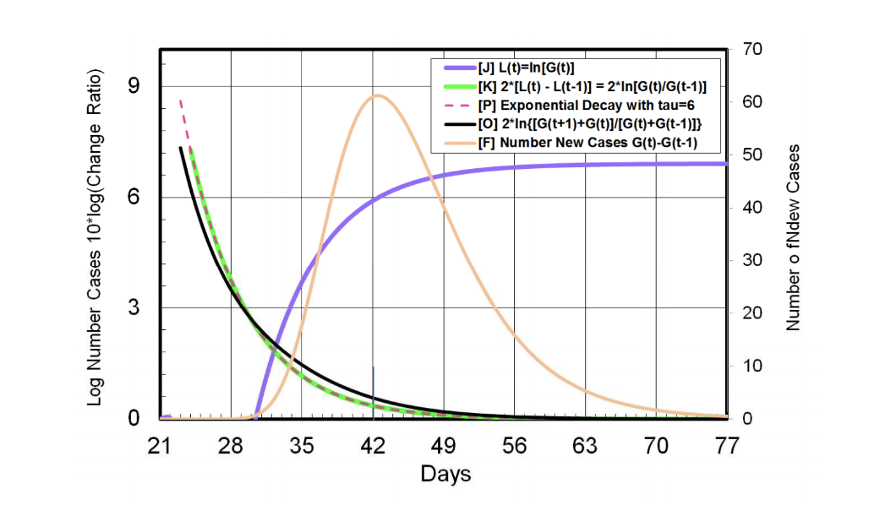

Corona Chronicles: A Personal Journey of Discovery
published: 27 January 2022 updated: 27 January 2022
The Wall Street Journal proclaims boldly that it's integrity as a source will then be transferred to the reader, yet they consider their sources valid only as long as they like the message.
At the beginning of April 2020 Dr. Michael Levitt of Stanford University was asked by The Wall Street Journal to write an editorial piece about his research on the Covid-19 pandemic, but then upon submitting it, it was immediately rejected without explaination.
Dr. Levitt's work was publicly available and hadn't changed, so one has to wonder what, other than making deliberate decision to censor certain scientific observations, could have happened in that short period of time to cause the WSJ to have such a dramatic change of heart.
It seems possible that the reason for the rejection may have been that Dr. Levitt didn't address many points in a way that was in line with the message the media wanted to project. For example, Dr. Levitt's discovery of the fact that Covid-19 outbreaks are naturally self-limiting from the start instead of identifying lockdown measures as the primary limiting factor flew in the face of the prevailing mantra. The work Dr. Levitt is referring to in this article is his analysis "Michael Levitt 22 Reports on COVID-19: 2 Feb to 3 Mar" and "The Corona Chronologies, Part I: China to 14 March 2020"
What follows is the article that was supposed to be the Wall Street Journal op-ed, reprinted in it's entirety from the original available at DropBox just recently having been made public on Twitter :
Dr. Michael Levitt's
Corona Chronicles: A Personal Journey of Discovery
Why has a scientist whose research area is modeling of complex systems in structural biology become the voice of reason on COVID-19?
I first heard about the Wuhan outbreak on 20 January when visiting nearby Changsha regarding a conference with medical professionals. After seeing that the number of cases of nCoV, as it was called then, was rising fast, I looked at SARS, the 2003 coronavirus outbreak that infected 8,000 and killed 800 people worldwide. I then analyzed the daily death rate of COVID-19 (ratio of total deaths to total cases) in the two places where reported: inside Hubei the province surrounding Wuhan, and everywhere else in China (non-Hubei). While the death rate of SARS was 10% (800/8,000), that of COVID-19 was 3.7% in Hubei but ten times lower elsewhere in China. This did not make sense to me so I got data daily to follow this number. As January ended, the Hubei death rate was growing much faster than the non-Hubei death rate. On 27 January it was 16-times higher, information that I shared with friends on WeChat, the Chinese equivalent of WhatsApp and FaceBook.
By 28 January, I was hooked and needed all the data. Fortunately an Indian data scientist, Sudalai Rajkumar, had being diligently saving data to kaggle.com, the repository of the machine learning and data science community. With this data, I chose to use Excel. Although I wrote the first computer program used for bimolecular simulation in the late 60’s (for which the Swedes recognized me 2013), Excel can be very helpful for preliminary data exploration. Plots were made of
four simple measures for each day. Three were obvious: the total number of cases; the total number of deaths, and their ratio, the death rate. The forth was trivial but less obvious: the ratio of the total for today divided by that of yesterday. This ‘fractional change’ is a measure of exponential growth. If today is always 10% more than yesterday, the value of today will be 1.1 times that of yesterday. In fact, on 29 January, the number of deaths today divided by that of yesterday was 1.3. Were such exponential growth of 30% a day to continue, everyone on earth would be infected within 90 days and likely 1% would die.
Analyzing the data more completely over the next few days, I noticed on 2 February that the fractional change for deaths in Hubei showed a steady decrease from 30% on 29 January to 18% four days later. Excited about this good news, I sent my first 2-page report to many friends around the world.
The next day my wife Shoshan and I flew from Tel Aviv to New York. On landing, I saw many emails from people in China who were not my WeChat contacts. They all asked the same question: “Was I the Michael Levitt whose report on COVID had be translated into Chinese and released publically?” I was the person who wrote this report for friends but the wide release was unauthorized and a big surprise. Clearly I had to follow the numbers for a few more days to see if what I said rather rashly made sense. This I did, spoiling our New York vacation. The new numbers each day confirmed the downward trend of the fractional change showing that exponential growth was indeed slowing for both cases and deaths. By 7 February, a very simple sigmoid function was fitted to the data in an attempt to predict total cases and deaths in China This curve fitting was very inaccurate as I had failed to give more weight to the larger values. In my almost daily reports, the predicted total deaths grew from 928 on 7 February to 3,000 on 17 February, which then remained stable and is close to the actual total for Hubei.
On 10 February, I first looked at the daily number of new cases. This noisy data was smoothed and revealed a clear peak in new cases in Hubei on 5 February, five days earlier. The maximum in new cases marks the day when the acceleration of the total count is at its fastest. Much more exciting is that the subsequent fall in new cases is a deceleration, which marks the end of the growth phase. I was upset that I had not noticed this turning point earlier. Subsequent analysis on 21 February revised the peak of new cases by 3 days to become 8 February, at which time the total number of cases and deaths were 36,000 and 700, respectively. Today the corresponding numbers in Hubei are 68,000 and 3,200, so that final cases are almost double while final deaths increase by four- fold from the midpoint. The greater multiplier for death numbers arises because new deaths peak after new cases. In Hubei this time difference was 7 days.
Meanwhile in China, non-Hubei, new cases peaked even earlier. The maximum in new cases occurred on 5 February but was not reported by me till 18 February. Stanford colleague Frederic Poitevin and I showed that it is possible to predict new deaths on a given day from the new cases on preceding days. Out of Hubei, death, when it occurred in about 1% of the cases, did so around Day 9. In Hubei, the death rate was closer to 4.5% mostly occurring around Day 9 but with some dying after a longer battle and others dying on Day 0. Day 0 deaths mean that a patient was so ill on the day of diagnosis that they did not survive.
On March 3, 30 days after my first report, I sent the 22nd report that ended with dramatic growth in the total number of cases and deaths outside of China (totals of 7,170 and 104, respectively). I now needed to focus on the whole world and on 14 March distributed a much longer report, the latest to date. In it, I started to plot total number of cases on a log scale as suggested by ShanghaiTech colleague Dr. Francesco Zonta. Like others, Francesco, had been plotting the log-curves and fitting a straight line to get exponential growth. When I made these plots for world data, I noticed that the logarithm of total cases or deaths is never a straight line.
In that same report of 14 March (PI day and appropriately filled with numbers, tables and 15 figures), I also plotted the fraction change on a log scale. It looked very spiky, clearly showing the starting date of many independent outbreaks, which made analysis much more difficult.
The curvature of the log-plots was a game changer for me. The sigmoid function I had been using to fit the Chinese data increased exponential at the beginning but the actual data did not, especially for the two cases that seemed least beset by multiple outbreaks, China, non-Hubei and the Diamond Princess cruise ship. I was puzzled and it was my own fault. My first ‘partner in crime’, Dr. Patrick Tam, a retired Chief Information Officer of Standard Chartered Bank, Hong Kong, started studying COVID when I did and we met online on 7 February. From 11 February Patrick had been using a generalized five parameter sigmoid-like function to fit the data. I preferred the simplicity of the standard three-parameter function that seemed to fit the China data so well. When this failed to predict the non – exponential growth I had observed, I asked Dr. Francesco Zonta who he replied in a word, albeit a strange word: “Gompertz”.
Gompertz was a British scientist who published his function in 1825. It looks sigmoid-like, has just 3 parameters but fits the log-plot data perfectly (FIG 1). It has only one parameter that matters, the rate at which the exponential growth decreases (the other parameters are the size of the outbreak and when it occurs). This hit me like a bombshell burst. It made no sense that the growth of COVID-19 was never exponential. We all know that viral growth is all about exponential growth but the data is fit really well by a function in which the rate of growth is never constant as it should be for true exponential growth. Instead it decreases exponentially from the first case with a decay time of about six days.
Figure 1:

As I pondered this and shared my report with the best scientists I knew, I devoted energy to building a real group adding three current-members of my small Stanford group, and two past-members living in The Netherlands and Sweden to the core group of Patrick Tam, Frederic Poitevin and Francesco Zonta. Backed by professionally programmers, data is now collected automatically every few hours and converted to beautiful plots and montages that appear in my Dropbox as if my magic. This enabled me to Tweet on 28 March that Italy and Switzerland were at or past there midpoints. A week later, I tweeted on 4 April that this “Peak Club” as Patrick Tam calls it, has been joined by six more European Countries (Spain, Portugal, Austria, Belgium, France and The Netherlands) as well as by New York City in the USA.
With so many countries having so many cases and such a tragic loss of life, it became possible to compare smaller countries that have very different population densities and diversity. These included Israel, Portugal, The Netherlands and Sweden, ostensibly chosen because we have team members from each. The data showed that although they all had multiple outbreaks, the log-scale plots were never straight lines and seemed to have similar curvature. All countries are now at or close to the mid-points, yet each adopted very different social distancing polices: Sweden doing little, The Netherlands and Portugal more, and Israel with strict lock-down.
What is the explanation of the similar trajectories of single outbreaks in these four countries and indeed in all the hundred other locations we analyze? One explanation is that each country adopts the measures needed to ensure social distancing of its specific population. Another explanation is that a particular outbreak of coronavirus is self-limiting as suggested by a growth rate that slows exponentially with a decay constant of six days. We cannot tell at present, but I do personally feel that the real danger are the hidden pools of infection caused by asymptomatic cases.
If people are able to infect others before they know they are sick, how can we protect against new outbreaks? Like so much that we now know, the answer was provided to me by my wife and friends who know China: “Always where a mask not to protect yourself but to protect others in case you are infectious without knowing it”. This common-sense idea was rejected at first but is now generally recommended. Strangely enough, in Israel, food is still sold in stores where the shopkeeper talks to customers without covering their face.
Although COVID-19 is on the retreat world-wide, it is too soon to know the excess burden of death. Will we be able to look back on the world death count in a year’s time and even know there was a pandemic? This might seem like a illegitimate question but on every day 160,000 people died of all causes world-wide. Most are of these are elderly and of the same over-70 year age group who have born the brunt of COVID fatalities. Before this is over, we expect the world fatalities from COVID-19 to exceed by three to four times their current values. These 300,000 tragic deaths will then be two days of normal world deaths and less than 10 days of normal deaths in the countries heavily hit.
What is clear is that the panic attacks, social stress, political maneuvering and economic damage will be with us for a long time to come. This raises my final question: What can we learn from this global disaster that prepares us for the many challenges that lie ahead in a future dominated by very significant global climate change? My personal consolation is that the developments in artificial intelligence may be rapid enough to allow our personal phone assistants to give an accurate answer to:
“Hey Siri, Alexa and Google, should I panic?”
-- Dr. Michael Levitt, April 2020, Stanford School of Medicine